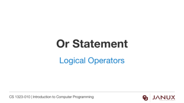
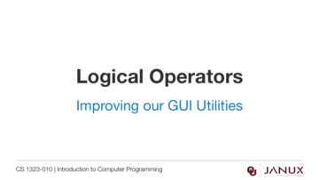

Logical Operators
This section covers logical operators.
Discover the logical operators and (&&), or (||) and not(!).
Java code developed in the video from this lesson.
Lecture Presentation
Lecture Presentation

